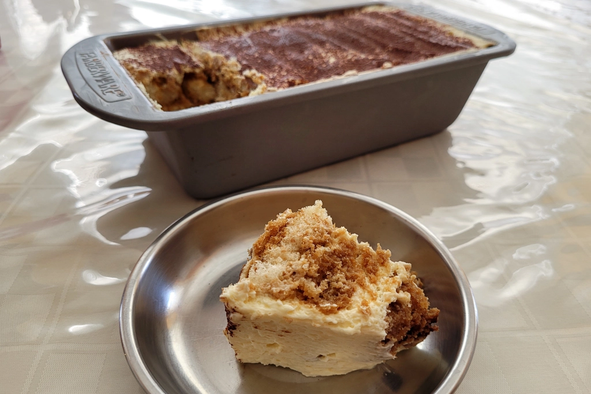

Tiramisu Recipe
Aug 1 - Written by Emily
As we are in the midst of summer, the last thing you want to do is turn the oven on on a hot summer day, so, we’re back with a no-bake dessert!
There are many no-bake desserts out there from cookies to cheesecakes, but I’m not here to talk about either one of those. This week, I decided to make a Tiramisu, a classic coffee flavored Italian dessert. With just a handful of ingredients and not a ton of prep time, its the perfect dessert to make on a hot summer day!
I followed the New York Times Cooking Recipe; however, there are many classic tiramisu recipes out there. I’ve made tiramisu a few times in the past with varying success so as I embarked on yet another attempt, I hoped for the best.
This recipe was very easy to follow as all you needed to do was combine all necessary ingredients together for the cream and then assemble. The key here is to be patient and whip the egg yolks and sugar together until the mixture is a pale yellow and has about tripled in volume. From there you create a separate mixture of heavy cream, sugar, and mascarpone before combining it all together.
Another important tip is to work quickly when dipping your lady fingers into the coffee as they become quite soft quite quickly as it soaks in the coffee. I found it was best to dip, flip, and lift to avoid your lady finger from soaking in too much coffee resulting in a somewhat wet tiramisu. That is a mistake I have made in the past so when it came to making it this time, I was more cautious on how much coffee was being absorbed. I did, however, come close to running out of coffee near the end so be sure you have enough to work with or else your tiramisu will be lacking a little in flavor.
Because I was using a loaf pan instead of a larger square or rectangular pan, I ended up with three layers of ladyfingers and cream instead of two. This wasn’t an issue as I just had to remember to portion out my cream appropriately.
Once I had it all assembled, I wrapped it up and placed it into the fridge for 24 hours. It doesn’t need this long, several hours will do but the longer you leave it in there, the more time the flavors get to develop.
Since I was worried about scratching my pan, I used a spatula to cut into my tiramisu resulting in a not so clean slice but nevertheless, it was quite delicious! I do have to say that it is a tad too sweet in my opinion and could use a touch more coffee but otherwise, I’d say it was a success. The best part about this dessert is that it's also served cold so not only is it super easy to throw together but it’s sure to be a favorite amongst guests on these warmer days.